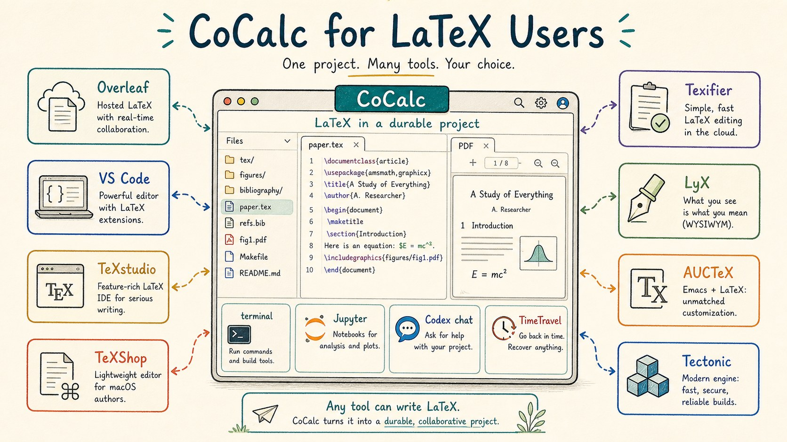
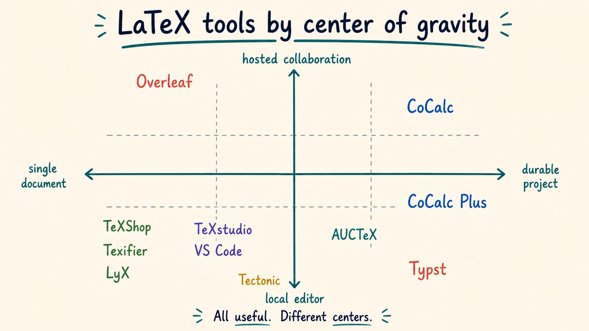
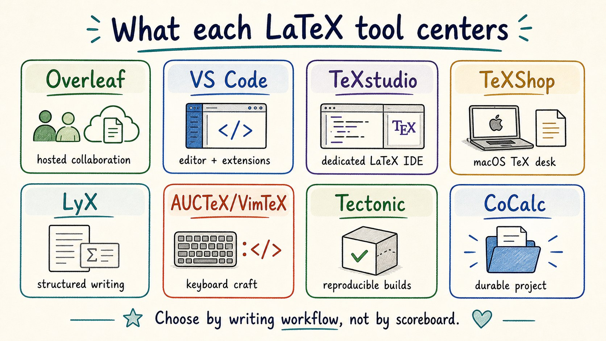
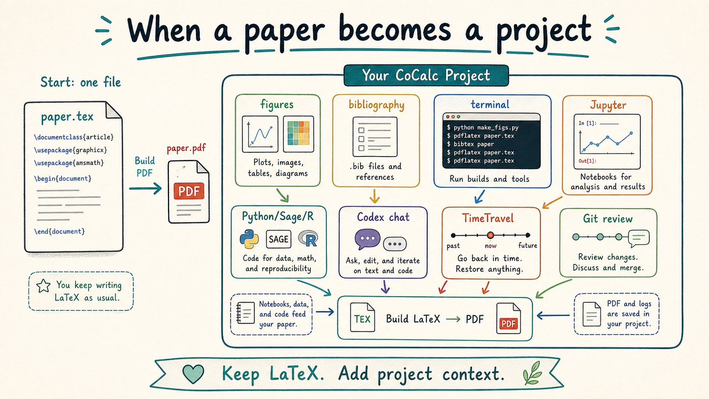
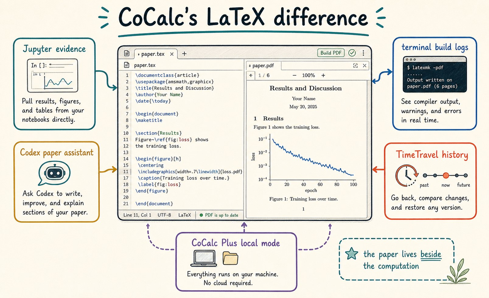
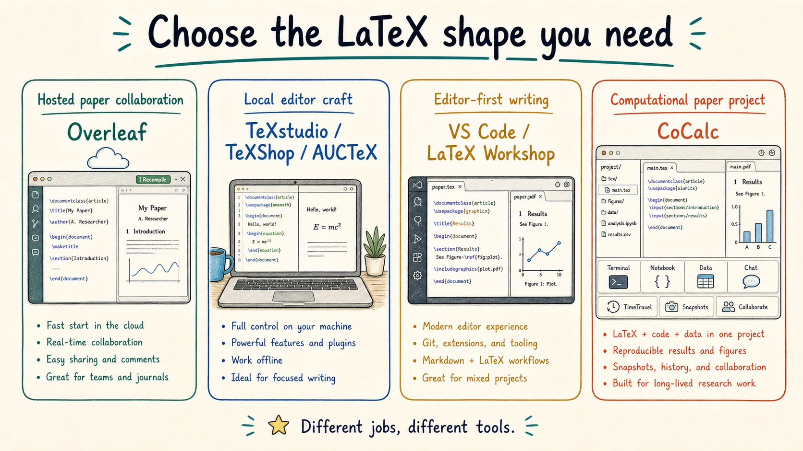

A CoCalc-AI field guide for technical writers
CoCalc for LaTeX Users
If you know Overleaf, TeXstudio, TeXShop, VS Code, LyX, AUCTeX, Tectonic, or Typst, the fastest way to understand CoCalc is this: LaTeX lives inside the same durable project as the code, data, notebooks, terminals, history, collaborators, and agents.

LaTeX tools are personal. Some people love Overleaf because a collaborator can open a link and edit immediately. Some love local editors because everything is on their machine. Some live in VS Code, Emacs, or Vim. Some prefer LyX's structured writing model. Some want Tectonic-style reproducible builds or Typst's newer typesetting language.
CoCalc is not trying to erase those instincts. It is for the moment
when the paper is more than paper.tex: figures from
Python, tables from Sage or R, a Jupyter notebook that justifies a
claim, terminal commands in the build, Git review, collaborators, and
an agent that can inspect the whole project.
Compare the center, not the checklist
Overleaf is the natural reference point for hosted LaTeX collaboration. It makes sharing a paper simple, and its visual editor mode is attractive when authors want more rendered structure while still writing LaTeX.
Local editors make a different bet: fast keyboard workflows, local files, editor extensions, and direct control over the TeX toolchain. VS Code plus LaTeX Workshop belongs in that world, as do dedicated editors such as TeXstudio, TeXShop, and Texifier.
CoCalc's center is the durable project. The LaTeX editor and PDF build sit beside notebooks, terminals, source files, generated figures, TimeTravel, chat, and Codex.

Many good products, different centers
Choose Overleaf when the main task is collaborative paper editing with almost no setup. Choose TeXstudio, TeXShop, Texifier, AUCTeX, or VimTeX when local editing craft and the TeX toolchain are the main event. Choose VS Code when the paper lives near a code repository and editor extensions. Choose LyX when structured writing is the desired writing model.
Choose CoCalc when the paper is a technical project: the PDF depends on code, notebooks, shell commands, data files, collaborators, history, and an AI assistant that should understand the project rather than only the current paragraph.

When a paper becomes a project
A mathematical or scientific paper usually has a larger working tree
than the final PDF suggests: .tex files, bibliography
files, figures, source data, scripts, generated tables, build logs,
notebooks, and notes from collaborators.
CoCalc keeps those pieces in one place. A terminal can run
latexmk, Python, SageMath, R, or a custom figure
script. A notebook can regenerate evidence. Codex can read the draft
and the code that supports it. TimeTravel and Git review make
changes inspectable after the writing session ends.

What CoCalc adds around LaTeX
CoCalc does not currently try to match every LaTeX-specific editing feature of Overleaf or every keyboard trick of a local editor. Overleaf's visual editor mode is a real advantage for some authors, and specialized local editors are excellent at fast TeX editing.
CoCalc's advantage is the project around the paper. You can build a paper with live terminal logs, regenerate figures in Jupyter, run Python/Sage/R as part of the workflow, ask Codex to inspect the draft and supporting files, and use TimeTravel to recover or explain changes.
CoCalc Plus adds another shape: a lightweight local CoCalc on your own laptop or SSH machine, with TimeTravel and Codex integration, without needing a hosted writing service.

Choose by writing workflow
The useful question is not "which LaTeX tool wins?" It is "where is the work already happening?"
If the paper is mostly collaborative prose and formulas, Overleaf is often the shortest path. If the paper is mostly local TeX craft, dedicated editors and editor plugins are hard to beat. If the paper is part of a larger repository, VS Code may fit naturally.
If the paper depends on computation, project files, command-line tools, notebooks, course material, live collaboration, or agent help, CoCalc starts closer to the whole workflow.

How nearby tools help explain CoCalc
CoCalc overlaps with hosted collaborative LaTeX, but the paper is part of a broader computational project.
CoCalc is less about maximal editor customization and more about keeping the build, data, and collaborators together.
CoCalc is project-first too, but the project includes notebooks, terminals, LaTeX, chat, TimeTravel, and browser collaboration.
CoCalc can host modern build tools, but its main claim is the durable workspace around the writing.
Where CoCalc fits in the product family
Hosted CoCalc is the managed path for collaborative computational papers. CoCalc Plus is the free local or SSH path for one user who wants the same style of workspace on their own machine. Launchpad is the self-hosted small-team path. Rocket is the enterprise-grade scale-up.
That makes CoCalc unusual for LaTeX: the same paper workflow can start as a personal local workspace, become a hosted collaboration, or move into a self-hosted site without changing the basic project model.
Good fits
- A paper whose figures or tables come from code.
- A course where students submit LaTeX and notebooks.
- A research group that wants paper, data, and chat together.
- A local laptop workflow with CoCalc Plus and TimeTravel.
Product names here are used descriptively. The goal is orientation, not ranking. For current details, read the official pages for Overleaf, LaTeX Workshop for VS Code, TeXstudio, TeXShop, Texifier, LyX, AUCTeX, VimTeX, Tectonic, and Typst.